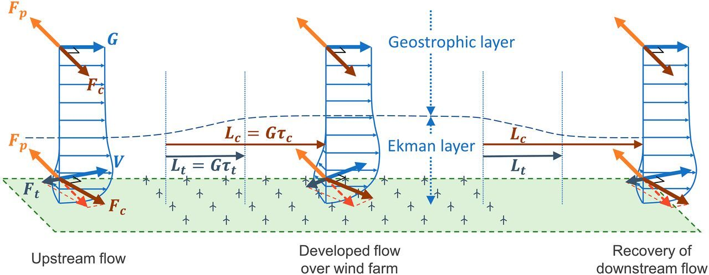
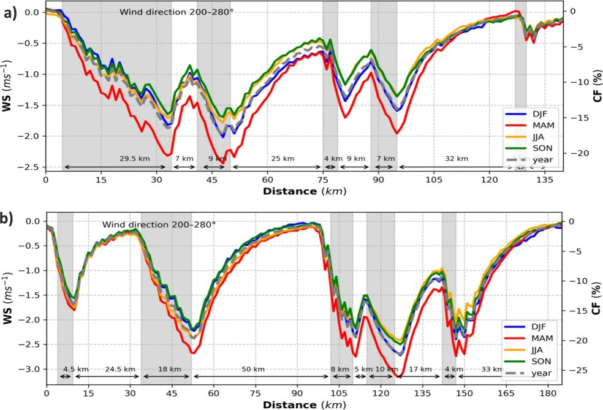

People sometimes presume that when scientists set out to test a hypothesis, they are engaged in motivated reasoning and want to show that the hypothesis is correct.
While there might be some merit in that presumption, it is also the case that there are few things more pleasurable to the working scientist than being presented with evidence that your beliefs are false.
Working with Enrico Antonini, I recently had just such a pleasurable experience.
Like many other energy system researchers, I thought kinetic energy removed by wind turbines in large wind farms was replenished primarily by downward transport of kinetic energy from the overlying free troposphere.
For the first row of wind turbines, most of the kinetic energy transport is horizontal with the winds. However, each wind turbine can remove more than half the kinetic energy that passes through the disk swept by its rotors. The wind does not have to pass through many wind turbines before horizontal transport of kinetic energy is largely depleted. A source of kinetic energy is therefore needed to explain why wind turbines can still generate energy even when they are not in the first several rows of wind turbines.
Many energy researchers, including me, thought the wind energy was maintained by downward transport of kinetic energy from the overlying free troposphere. For example, in a 2017 paper published in PNAS, with Anna Possner as lead author, we wrote:
However, it remains unclear whether these open ocean wind speeds are higher because of lack of surface drag or whether a greater downward transport of kinetic energy may be sustained in open ocean environments.
I believe many people held this view. For example, a paper was published in Geoscientific Model Development with a nice illustration of this mental model, showing a downward flux of kinetic energy.
Enrico Antonini did some nice work in a paper published in PNAS this week that expands on a paper published in Applied Energy earlier this year. The Applied Energy paper showed how maximum power densities in regional scale wind farms are limited to a few watts per square meter, and are related to the Coriolis parameter times the pressure gradient.
In these papers, Enrico provides compelling evidence that the kinetic energy removed by wind turbines is replenished primarily by acceleration of air masses within the boundary layer by large-scale pressure forces (which are no longer balanced by apparent Coriolis forces due to the slowing of winds caused by the wind turbines).
Below is a schematic diagram of how things seem to work. Normally, large-scale pressure forces are balanced by apparent Coriolis forces resulting in what is known as “geostrophic flow”. However, as wind turbines remove kinetic energy from the winds, the apparent Coriolis forces weaken, and the unbalanced pressure gradient forces accelerate the air within the boundary layer.

Very little of the replenishment of wind energy is associated with downward transport of kinetic energy from the overlying free troposphere. The dichotomy we presented in our 2017 paper was a false dichotomy. Open ocean wind speeds are higher, but not primarily because there is less drag and not because there is substantially more downward transport of kinetic energy. The explanation for higher wind speeds over the ocean has to do with higher horizontal pressure gradients.
In the supporting material to the 2017 paper, Anna and I showed how wind power potential was closely related to heat fluxes at the planetary surface (blue are ocean areas, green is land; top to bottom is northern latitudes, tropics, and southern latitudes).

We presented this result without firm theoretical foundation. But now it seems that wind speeds over the ocean are high largely because ocean heat fluxes are high, and they can produce large temperature gradients, and these large temperature gradients can produce large pressure gradients, and large pressure gradients can drive strong winds.
Additionally, the theoretical understanding that Enrico developed predicts a length scale for recovery of winds downstream from a regional-scale wind farm. This length scale is the product of a time scale related to the Coriolis parameter times the geostrophic wind speed. The theoretical prediction of a length scale of several tens of kilometers is nicely supported by a recent study of wind speeds near large wind farms in the North Sea which found a similar length scale in detailed simulations.

It is a real pleasure to be able to work with nice, smart, and productive people like Enrico Antonini. It is a privilege to be able to hire a bright early-career scientist who can show me my beliefs were wrong. And it is really nice to be working in a community where there is no great stigma to being wrong, if you are willing to adjust your beliefs in the light of new evidence.
On a final note, Enrico is on the job market. For his Master’s work, he worked at the scale of the turbine blade. For his PhD work, he worked at the scale of optimizing wind turbine positions within a wind farm. For the first part of his postdoc work, he worked at the transition between wind farm scale and what we might call the mesoscale. Now, he is engaged with a study on placement of wind farms in the context of continental-scale optimization.
Very few postdocs develop a fundamental theoretical understanding that makes testable predictions and has real world implications for energy system transition. (Enrico’s understanding can help people make a quick estimate of how closely wind farms can be spaced without them interfering with each other too much.)
If your department would benefit from hiring somebody who understands scale-transition issues related with wind power development, you need look no further than Enrico.
Where to read more
- The publication this post is about: Spatial constraints in large-scale expansion of wind power plants (Antonini and Caldeira, 2021 · Proceedings of the National Academy of Sciences)
- Published article (doi:10.1073/pnas.2103875118)
- How much wind power can the atmosphere actually supply?